|
En el triángulo ABC (ÐA=90º), construir el círculo (O1, r1) tangente externamente a los excírculos (Ib) e (Ic) de tal forma que sea también tangente al lado BC, con el punto de tangencia entre B y C. Probar que:
Donde: ra= radio del excirculo (Ia) y r = inradio de ABC. |
|
Propuesto por Juan Carlos Salazar
|
Solución de Francisco Javier García Capitán
Usamos la inversión para construir, sin tener en cuenta que el triángulo sea rectángulo, la circunferencia citada por el enunciado.
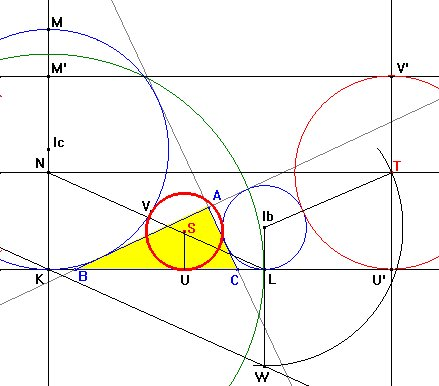
Sean K, L los puntos de tangencia con BC de (Ic) e (Ib). Consideramos la inversión con centro K y radio KL. Como el triángulo KLIb es rectángulo, la circunferencia (Ib) será ortogonal a la circunferencia de inversión y por tanto, fija. La circunferencia (Ic), que pasa por el centro de inversión K se transformará en una recta: concretamente, si KM es un diámetro de (Ic), la circunferencia (Ic) se transformará en la paralela a BC por el punto M' inverso de M. La circunferencia buscada será la inversa de una circunferencia (T) tangente a BC, su paralela por M' y a la circunferencia (Ib), que es fija.El centro de esta última circunferencia estará en la paralela media a las dos paralelas (en la figura la que pasa por el punto N) y este centro distará de Ib una distancia rb + NK. Prolonguemos el segmento IbL hasta W de manera que LW = NK (para ello basta unir LN y trazar una paralela por K). Con centro Ib y radio IbW trazamos un arco que corta a la parela por N en T. La perpendicular a BC por T determina los puntos U' y V', inversos de los puntos de contacto de la circunferencia buscada con BC e Ic.
Hallemos el radio de la circunferencia (T).
El radio de inversión es KL = KB + BC + CL = (s - a) + a + (s - a) = 2s - a = b + c. Entonces,
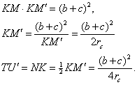
Ahora recordemos esta propiedad de la inversión:
|
Si una circunferencia de centro Q y radio r se transforma en una circunferencia de radio s mediante una inversión de centro O y radio k, entonces se cumple que 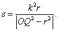 |
En nuestro caso el radio r1 buscado será
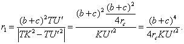
Tenemos que KU' = KL + LU' y
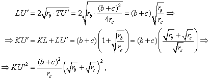
y de aquí,
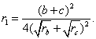
Esta fórmula es válida para cualquier triángulo, sin necesidad de ser rectángulo. Veamos que en el caso de que el triángulo sea rectángulo en A esta fórmula corresponde a la fórmula propuesta en el enunciado.
En cualquier triángulo el área D se expresa mediante las fórmulas:
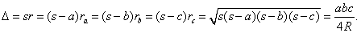
De aquí podemos deducir que se cumple que
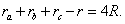
Además, si el triángulo es rectángulo en A tenemos
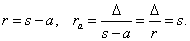
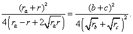
En lo que se refiere a los numeradores tenemos que
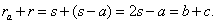
En los denominadores, por un lado tenemos que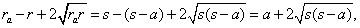
mientras que por otro,
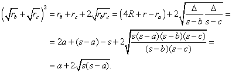
Por tanto, en el caso del triángulo rectángulo en A las dos fórmulas son equivalentes.